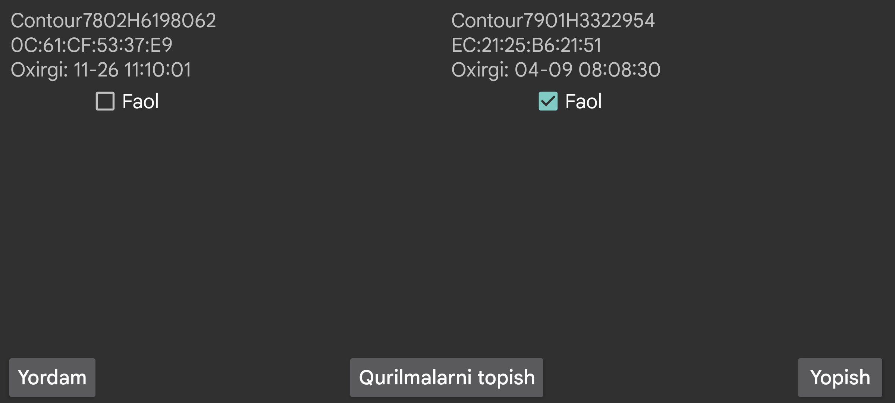

ar de es hi it ja nl ru uk uz en
Juggluco ayrim qon glyukozasi o'lchagichlaridan Bluetooth orqali qon glyukozasi test o'lchovlarini qabul qila oladi.
Agar sizda Contour Next ONE bo'lsa, uni glyukoza o'lchagichdagi Data Matrix kodini chap menyu→Foto orqali skan qilib Juggluco ga qo'shishingiz mumkin.
Boshqa o'lchagichlar uchun “Qurilmalarni topish” tugmasini bosishingiz va qurilma topilganda uni bosishingiz kerak.
Qon glyukozasi uchun yorliqni tanlashingiz va qaysi sana hamda vaqtdan boshlab glyukoza o'lchovlarini qabul qilishingizni ko'rsatishingiz kerak bo'lgan ekran ko'rsatiladi.
Birinchi safar glyukoza o'lchagichni JUFTLASH rejimiga o'tkazishingiz kerak, masalan, o'chirilgan o'lchagich tugmasini ko'k chiroq miltillaguncha uzoq bosib.
Juggluco bu yerda allaqachon Juggluco bilan ishlatilgan glyukoza o'lchagichlarini ko'rsatadi.
Har bir glyukoza o'lchagich uchun qurilma nomi va qurilma manzili ko'rsatiladi; buni Android sozlamalaridagi “Connected Devices” bo'limida ham ko'rish mumkin.
Oxirgi: ushbu glyukoza o'lchagichidan qabul qilingan oxirgi glyukoza qiymati vaqti.
(Ulandi/Uzildi): oxirgi ulanilgan/uzilgan vaqt
Yangi ma'lumot yo'q: Bu vaqtda glyukoza o'lchagich bilan almashuv muvaffaqiyatli bo'lgan, ammo yangi ma'lumot bo'lmagan;
Yangi ma'lumot: o'sha vaqtda yangi ma'lumot qabul qilindi.
Faol: Agar “Faol” belgisini olib tashlasangiz, Juggluco endi glyukoza o'lchagichiga ulanmaydi.